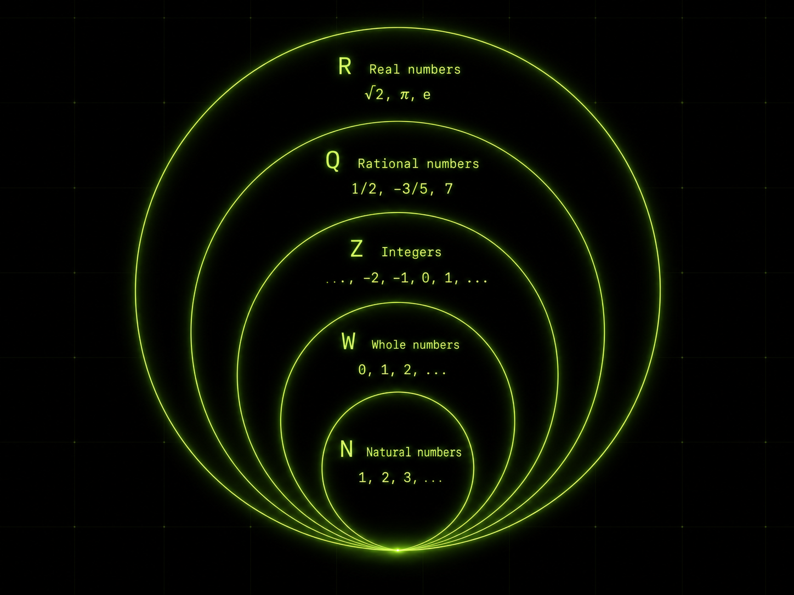

The Problem of Negative Square Roots
$\large \sqrt{-9}$
A square root of a number is a value that, when multiplied by itself, gives that number.
$\large x^2 = -9$
But what could $x$ be here?
Nothing on the real number line works because:
$(+) \cdot (+) = +$
$(-) \cdot (-) = +$
While we need:
$(x) \cdot (x) = -$
You might be thinking:
$$3 \cdot (-3) = -9$$
But:
$$3 \neq -3$$
Yikes...
Extending the Number Line
Throughout history, the number line has repeatedly been extended whenever existing numbers were not enough to solve a new kind of problem.
At first, we had the natural numbers, $\mathbb{N}$:
$$1, 2, 3, 4, 5, \dots$$
These allowed us to count quantities. But subtraction quickly creates a problem:
$$3 - 5 = \ ?$$
There is no natural number that answers this. To make this operation possible, the number line was extended to include negative numbers:
$$3 - 5 = -2$$
This gives us the integers, $\mathbb{Z}$:
$$\dots, -3, -2, -1, 0, 1, 2, 3, \dots$$
But division creates another problem:
$$4 \div 8 = \ ?$$
There is no integer that answers this. To make this operation possible, the number line was extended again to include fractions:
$$4 \div 8 = \frac{1}{2}$$
This gives us the rational numbers, $\mathbb{Q}$: numbers that can be written as a ratio of two integers.
Then square roots reveal another limitation:
$$\sqrt{2} = \ ?$$
There is no rational number whose square is exactly $2$. To include numbers like this, the number line was extended to include irrational numbers: numbers whose decimal expansions continue forever without repeating.
$$\sqrt{2} = 1.4142135\dots$$
Together, the rational and irrational numbers form the real numbers, $\mathbb{R}$. This gives us the full real number line.
So while no real number can be the square root of a negative number, perhaps the number line could be extended once again?
$$\sqrt{ -1 }= \ ?$$
This number would be simply defined by the property that it squares to $-1$.
$$(x) \cdot (x) = -$$
However, while negative numbers are understood through ideas like debt, and fractions are understood the moment you need to feed a family with one loaf of bread, the interpretation of a number that squares to a negative is far less clear.
In fact, mathematicians initially viewed this as no more than an algebraic trick. Reflecting this early skepticism, it became known as an imaginary number, and later denoted by the letter $i$.
$$i= \sqrt{ -1 }$$
$$i^2= -1$$

Expressing Negative Square Roots in Terms of $i$
If:
$$i^2 = -1$$
Then multiplying $i$ by a real number should produce a number that when squared gives a negative.
For example, to answer our earlier question: $\large x^2 = -9$.
$$(3i)^2 = 3^2 i^2$$
$$3^2 i^2= 9\cdot-1$$
$$= -9$$
So $3i$ is a number whose square is $-9$.
Therefore,
$$\sqrt{-9} = 3i$$
This was important because it meant mathematicians did not need a different new symbol for every negative square root:
$$\sqrt{-1}, \quad \sqrt{-2}, \quad \sqrt{-3}, \quad \sqrt{-4}, \dots$$
A single new quantity, $i$, was enough to express them all:
$$\sqrt{-a} = \sqrt{a}i$$
for any positive real number $a$.